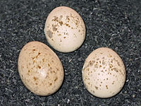
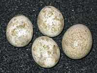
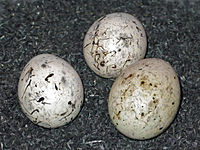
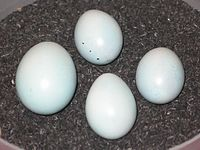

CuckooChess
{kind=link}
CuckooChess,
an advanced free open source chess program under the GNU General Public License written in Java by Peter Österlund. CuckooChess provides an own GUI, and optionally supports the UCI protocol for the use with external GUIs such as Arena. An Android port is available, where its GUI is also base of Peter Österlund's Stockfish port dubbed DroidFish [2] .
Contents
Internals
CuckooChess applies many of the standard methods for computer chess programs, such as iterative deepening, negascout, aspiration windows, quiescence search with SEE pruning and MVV/LVA move ordering, hash table, history heuristic, recursive null moves, futility pruning, late move reductions, opening book and magic bitboards. CuckooChess name was chosen because it's transposition table is based on Cuckoo hashing [3] .
See also
Forum Posts
- New UCI engine - CuckooChess by Tony Mokonen, CCC, January 11, 2010
- CuckooChess 1.12 by Peter Österlund, CCC, October 24, 2011
- Chess-playing lego robot by Peter Österlund, CCC, January 30, 2014 » Nona, the Chess-Playing Lego Robot
External Links
Chess Engine
Misc
- Cuckoo hashing from Wikipedia
- Cuckoo search from Wikipedia
- Cuckoo clock from Wikipedia
- Cuckoo (disambiguation) from Wikipedia
- Cuckoo from Wikipedia
- Common Cuckoo - Breeding
- The Cuckoo's Egg (book) from Wikipedia
- Cuckoo's Egg (science fiction novel) from Wikipedia
- Cuckoo's Eggs [5]
|  |  |  |  | |
| Red-backed Shrike | Garden Warbler | Yellowhammer | Common Redstart |
{kind=link}
{kind=link}
{kind=link}
{kind=link}
References
- ↑ Fan-tailed Cuckoo (Cacomantis flabelliformis), Bruny Island, Tasmania, Australia, Common Cuckoo from Wikipedia
- ↑ DroidFish - Strong chess program for the Android platform
- ↑ CuckooChess 1.12 - A Java Chess Program
- ↑ Re: PHOENIX=CuckooChess with learning function in Falcon style by Peter Österlund, CCC, March 20, 2016
- ↑ Images from Kuckuck - 7.2 Eiablage Wikipedia.de (German)